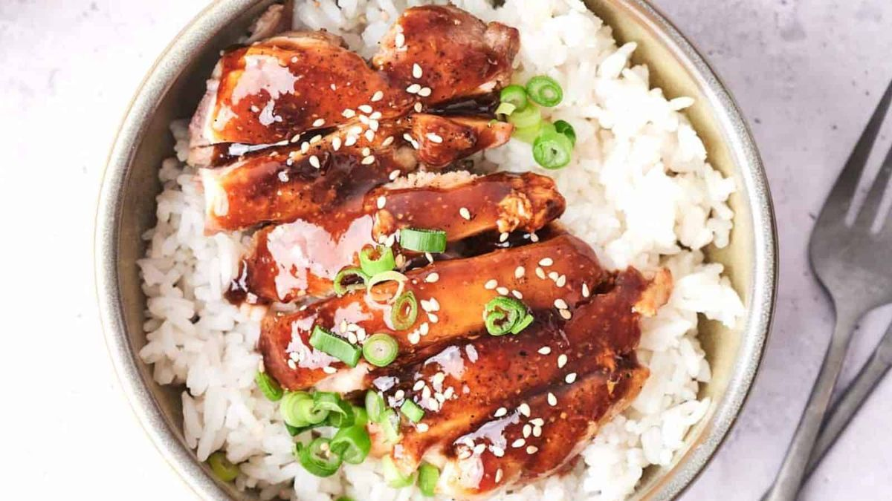

Copycat Panda Express Teriyaki Chicken

- Meal
- Dinner
- Serves
- 6
- Protein
- chicken
- Cook
- stovetop · 20 min active / 30 min total · easy
- Make-ahead / leftovers
- no / yes
- Mediterranean
- no
- WW tier
- moderate
- Status
- Trying out (probation)
The link from your old Dining Out note — a kid-proven comfort dish. When the family wants takeout vibes on a home-cooked budget.
Ingredients
- 2 lb chicken thighs or breasts
- 1/4 cup soy sauce
- 2 tablespoons honey
- 1 tablespoon brown sugar
- 1 teaspoon garlic powder
- 1 teaspoon ground ginger
- 1 tablespoon cornstarch + 2 tablespoons water (slurry)
- Serve with steamed rice and broccoli
Method
- Mix soy sauce, honey, brown sugar, garlic, and ginger.
- Cook chicken in a skillet over medium-high heat until done.
- Pour sauce over the chicken, bring to a simmer.
- Stir in cornstarch slurry and cook 1–2 minutes until sauce thickens.
- Serve over rice.
Notes
- From the old Dining Out "Copy-cat Recipes" link — now promoted to a real recipe file.
- Serve with broccoli for a more balanced plate.